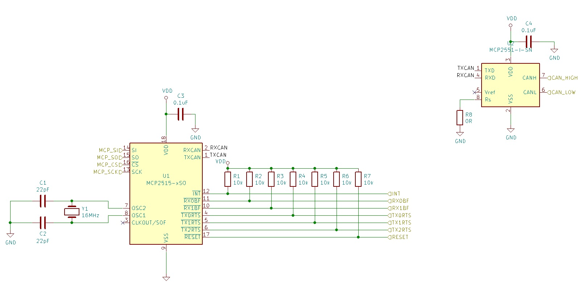
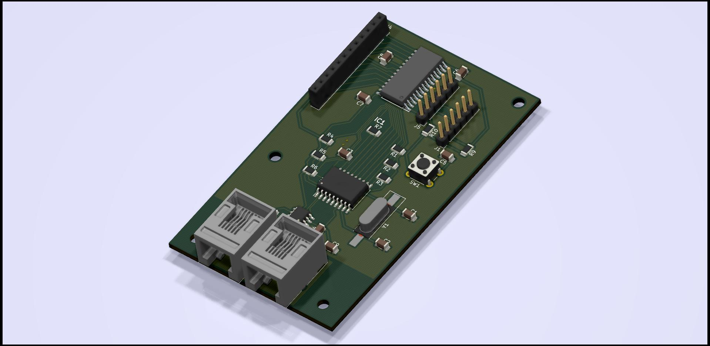
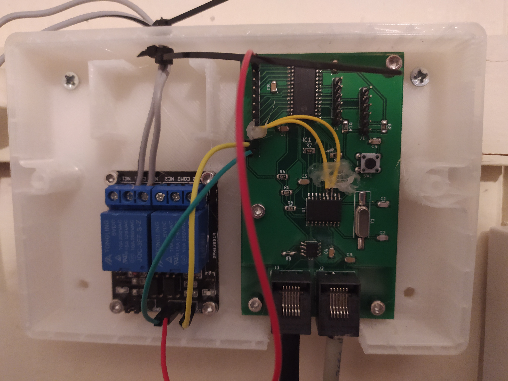

Table of Contents
1 Summary
For my home automation system, one of the main systems is by combing-boiler controller. At the moment, the system simply switches the boiler on or off, but in the near future, I hope to implement the boiler's OpenTherm system, so that I can have finer grain control over the system (such as the temperature of the temperature of the water going into the radiator system).
2 Wired or wireless
In the past, I have experimented with wireless systems, such as wifi (using esp32), 433MHz, and 2.4GHz. However, for various reasons, I have decided that most of my new home automation system will be hardwired.
Even then, I've looked into a variety of communications systems including:
- Ethernet: Would work well, but not too easy to implement, is quite a power hog, and would need a central hub, with an Ethernet cable for each node.
- Mobdus: I initially did quite a bit of work getting modbus to work, but found it to be an issue when I needed data quickly. Being a master-slave setup, I would need to poll the data which also cause the system to slow down when many nodes were added.
- Linbus: Would suffer for same issues as modbus.
- Canbus: Fast, multi-master, bus based network, so I could daisy-chain nodes.
In the end, I decided to go with Canbus. As well as the reasons above, I also develop Canbus based systems at work, so this seemed like quite a good fit for me.
3 Canbus network
3.1 Transceiver
For my system, I'm using the Microchip MCP2551 High-speed CAN Transceiver (link here). It's pretty cheap (about £0.70 per chip), easy to work with, and so far, works pretty well. There are probably cheaper transceivers out there, but for now I'll keep to this one as it's worked for me without any issues.
3.2 Controller
Reading through the Canbus specifications, it would be perfectly possible to create my own Canbus driver. Alternatively, I could find a micro-controller that has a Canbus driver built in. However, I mainly program with PIC micro-controller, and there aren't any PIC24 or PIC16 ICs that have a built in Canbus module. Instead, I decided to be a bit lazy and use an external Canbus controller, the MCP2515 Stand-Alone CAN Controller with SPI Interface. This controller sets up all of the timers, collision monitoring, and framing needed to send data over a Canbus network at upto 1Mb/s (presuming the hardware is setup correctly). Being SPI, it's easy to talk to (my home system uses the PIC24 built-in SPI module, and a system I'm developing at work uses bit-banging to communicate via a GPIO pin). It also works well with the MCP2551 transceiver above, making the circuit design nice and easy. There are also interrupt pins for indicating that data has arrived, which allows me to put the PIC into sleep to try and conserve power (though I have yet to implement anything like that yet).
The circuit for this is pretty simple and is shown below (the full KiCad schematic will be provided in a Github link further below).

Figure 1: Canbus controller and transceiver circuit
I'm not currently using all of the interrupt pins, instead using the SPI commands. The ones that I am using are INT and RX0BF. I will add the other interrupts at some point, so I have added them for that later use.
For connections, I'm using RJ12 connections. These are cheap, easy enough to hand-crimp, and twisted-pair 6 core cable is easy enough to come by. I could have gotten away with using 4 cores (2 for power and 2 for signals), but doubling-up on the power connections gives that little bit less resistance.
4 Micro-controller
For all of my non-touchscreen projects, I use Microchip's PIC16 or PIC24 ICs. These are what I know and for the most part I do like working with them. I'm able to setup a good development environment that allows me to use the command line for most of my work (see Developing PIC24 Projects using the Command Line), a can set up unit testing using Ceedling, and I can use Vim and YouCompleteMe to edit my code. So far it works quite well and I haven't found much of a reason to move to a different ecosystem (expect when developing touchscreen projects, in which case I do use a couple of STM32 devices instead, as TouchGFX is a really good system!).
For this system, I'm using a PIC24FJ256GA702. This gives me plenty of room for expansion, can probably be used in most of my HA systems, and comes in a number of different package types for different parts of prototyping.
5 Schematic and PCB
The board is designed so that it connects to an external relay / SSR board so that it doesn't have to switch over AC voltages. This is mainly for safety, but also to give me more options for adding different things. Header pins an junction J4 are used to connect power, gnd, and switching signals. By changing the PIC code, it could also be used to connect external sensors, other switching circuits, or communicating with many other devices.
For my setup, I'm using a cheap relay circuit that I bought via Aliexpress. Any should do, just make sure that it's rated for whatever you're switching. At the moment, I'm connected to the relay board via a few jumper connections, but I intend on changing those soon.
The KiCad project can be found here. At the time of writing, the version in master is v1.1. This contains schematic and pcb design that was used to create the first prototype board, which can be seen below (I do like KiCads 3D rendering).

Figure 2: 3D rendering of PCB
There are a number of mistakes in the schematic design that will get fixed in the next version:
- C5 needs to be removed, or replaced with a 0R resistor
- This was added by mistake and was not picked up until after the boards were sent for manufacturing
- The capacitor is stopping the PIC from being resetted when the tact button, SW1 is pressed
- The SCK and INT pins were connected to the PGD and PGC pic programming pins.
- While I thought this was working fine in the initial breadboard testing, it was actually stopping the PIC from being programmed.
- I'm not sure how I missed that one during initial testing.
In the end, the mistakes above were easy enough to fix with a couple of jumper wires as shown below.

Figure 3: Finished PCB with fixes to SCK and INT pins
Since I'm going to redesign the pcb soon, I haven't put a lot of thought into the 3D printed case. I'm also going to use a different relay board. The current one has two relays, which was useful when my boiler was both a radiator and an immersion boiler in one, both of which could be switched off / on separately. However, since I now have a combi-boiler, I only need a single switch.
6 PIC Program
The PIC program needs quite a bit of work, which I will start doing soon. Therefore I'm going to leave out the code here and add it to a later post. I need to update the canbuscontroller module so that it can be used with all my different systems, and at the moment, that isn't working correctly.
Comments
There are no comments yet.